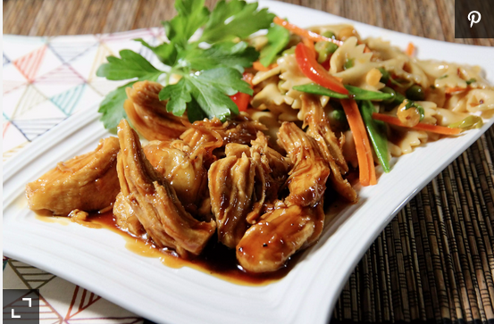

Ingredients
- ½ cup soy sauce
- ½ cup water
- ½ cup brown sugar
- 2 tablespoons rice wine vinegar
- 1 tablespoon mirin (Japanese sweet wine)
- 1 tablespoon sake
- 1 tablespoon minced garlic
- 1 dash freshly cracked black pepper
- 1 pound skinless, boneless chicken breast halves
Directions
- Step 1
Stir mayonnaise, green onion, mustard, salt, garlic powder, paprika, and black pepper together in a bowl until smooth; add eggs and gently mix to coat in the mayonnaise mixture.
Nutrition Facts
Per Serving:146 calories; protein 6.5g; carbohydrates 1.3g; fat 12.6g; cholesterol 215.5mg; sodium 216.6mg.
Home page